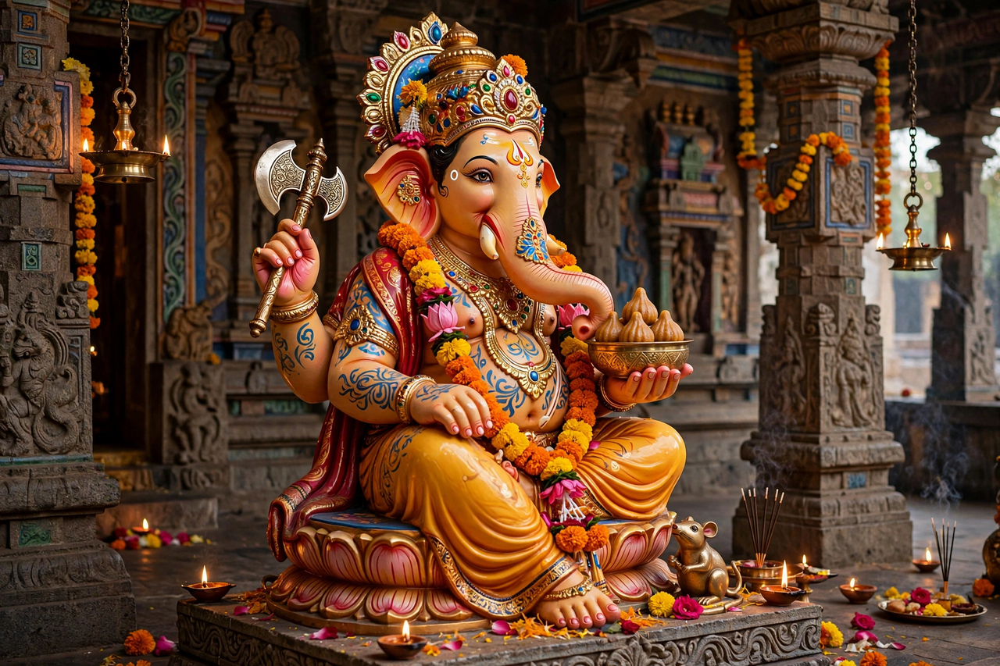

Ganesha

| Other names | Ganapati, Vinayaka, Vighnaharta |
|---|---|
| Affiliation | Deva; god of beginnings, wisdom and remover of obstacles |
| Parents | Shiva and Parvati |
| Siblings | Kartikeya (brother) |
| Vahana | Mouse (Mushaka) |
| Festival | Ganesh Chaturthi |
Ganesha (Sanskrit: गणेश), also known as Ganapati and Vinayaka, is one of the best-known and most widely worshipped deities in the Hindu pantheon. His elephant head makes him instantly identifiable. He is honoured at the beginning of rituals and ceremonies as the remover of obstacles (Vighnaharta), the patron of arts, sciences and letters, and the god of intellect and wisdom.
Mythology
Ganesha is the elder son of Shiva and Parvati and brother of the war god Kartikeya. In the best-known myth, Parvati formed him from the paste of her own body and set him to guard her door; when Shiva, not recognising the boy, cut off his head in the ensuing quarrel, he replaced it with the head of an elephant and restored him to life. Another tradition holds that Ganesha used his broken tusk to write down the Mahabharata as the sage Vyasa dictated it. His vehicle is the mouse Mushaka, and his favourite food is the sweet modak.
Worship
Devotion to Ganesha is pan-Indian and also appears in Jainism and Buddhism; he is among the five deities of the Smarta Panchayatana puja. The festival of Ganesh Chaturthi, especially grand in Maharashtra, culminates in the immersion (visarjan) of clay images in water. The eight Ashtavinayaka temples around Pune are major pilgrimage sites.